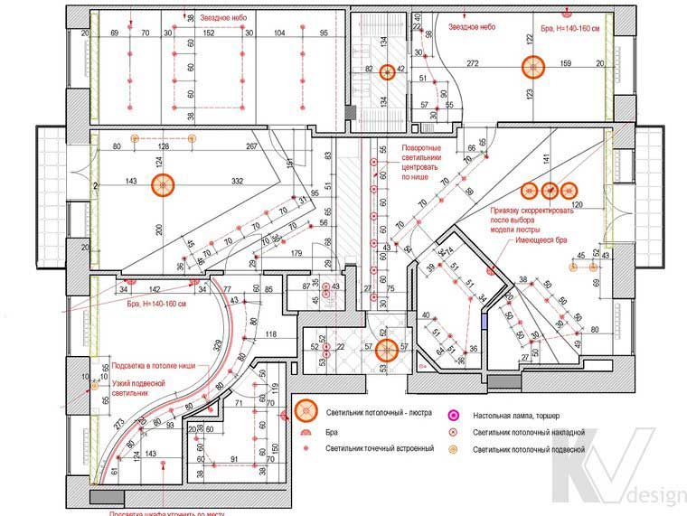

План потолков с размещением осветительного оборудования

На підставі даного креслення будівельники виконують монтаж електроточок, а згодом і електроосвітлювальних приладів. При необхідності для наочності подаються фотокартки майбутніх світильників і вже втілених ідей. Підсумковий план, розроблений на основі трьох концептів, описує остаточну конфігурацію стель у всіх приміщеннях і види використовуваних джерел світла, з точною прив'язкою кожного світильника щодо стін і стельових конструкцій.
У дизайн-проект завжди закладається більшу кількість освітлювальних приладів, ніж це необхідно в реальності, оскільки на стадії розробки створюється відразу кілька світлових сценаріїв. Вони включають в себе яскравий основний і приглушений вечірнє світло, освітлення над обіднім або робочим столом, в зоні перегляду ТБ, а також спеціальні види приладів - наприклад, кольорове світло для вечірок, або стелю «зоряне небо».